Lux & Morte

Lux & Morte is a fast-paced, asymmetrical multiplayer party game set in a colorful, symbolic vision of the afterlife. Inspired by Día de los Muertos aesthetics, the game blends vibrant visuals with competitive gameplay focused on local multiplayer interaction.
Two players take on opposing roles: one controls the Light, navigating a dangerous maze in an attempt to survive, while the other commands a horde of hostile skulls, trying to capture the Light player. The gameplay is designed around tension, quick decision-making, and direct player competition.
During development, the project was regularly reviewed during industry evaluation sessions, where it was consulted with professionals and received consistently positive feedback. This iterative process helped refine gameplay mechanics and improve the overall player experience.
Team ▾
Team Members
| Name | Role |
|---|---|
| Żaneta Żurańska | Team Lead, Programmer |
| Mateusz Lipiński | Programmer |
| Damian Jasek | Programmer |
| Igor Skwarczyński | Artist |
| Konrad Kuberski | Artist |
My Role in the Project
I served as both Team Leader and Gameplay Programmer, taking responsibility for key gameplay systems while coordinating development, maintaining the repository, and integrating the team's work throughout production.
Gameplay Programming
- Ghost AI based on the classic Pac-Man behavior algorithm
- Level design and gameplay balancing
- Level selection system
- Ghost UI
- Intro cutscene implementation
Team Leadership
- Project planning and task coordination
- Repository management and Git workflow
- Resolving merge conflicts and integrating team features
- Maintaining project stability throughout development
Project Context
The project was developed as part of the course "Fundamentals of Computer Games" at the Lodz University of Technology. It was created in a team environment, focusing on delivering a complete and playable multiplayer experience.
Special thanks for knowledge sharing and mentorship go to Aneta Wiśniewska and Rafał Szrajber, whose guidance significantly supported both the technical and design aspects of the project.
Technologies Used ▾
- C#
- Unity
- FMOD
Codebase ▾
Source code for Lux and Morte, including multiplayer gameplay systems, ghost AI, level selection, UI, cutscenes, and core game logic built in Unity.
Assets/_Game/Scripts/Shadow
Assets/_Game/Scripts/UI/ShadowSwitch
Development Notes ▾
Project Challenges
Developing Lux and Morte introduced several design and technical challenges, primarily due to its asymmetric gameplay structure and real-time multiplayer elements. A key focus of the project was ensuring that both player roles remained balanced and engaging throughout the entire experience.
- Balancing asymmetric gameplay between different player roles (ghosts vs. opposing side), where each had unique abilities and interaction rules.
- Iterative balancing through repeated playtesting sessions with industry professionals and external testers, followed by continuous feedback implementation.
- Designing flexible switching and interaction systems between different ghost to ensure fair and readable gameplay.
- Optimizing Unity Tilemap performance after encountering significant FPS drops.
How We Solved It
The project was refined through continuous iteration, external playtests, and rapid implementation of feedback gathered during showcase events and industry sessions.
- We conducted multiple playtests with industry professionals, using their feedback to adjust movement speed, abilities, and overall pacing of asymmetric gameplay.
- Implemented multiple balancing approaches for ghost switching mechanics, allowing smoother transitions and better control over player roles.
- Optimized level performance by reducing Tilemap complexity.
- Continuously refined gameplay feel based on real-world demo feedback gathered during events and competitions.
What I Would Do Differently
Looking back, it is difficult to identify a single major change, as the project benefited heavily from its iterative nature and external feedback cycle. The ability to showcase the game at multiple industry events significantly shaped its final direction.
If anything, I would introduce performance testing and balancing earlier in development, especially for Tilemap-heavy scenes, to avoid late-stage optimization work. Overall, the project was a valuable experience in both gameplay balancing and real-world iteration under event conditions.
Gameplay Video ▾
Gallery ▾


Download ▾
Play the latest version of Lux & Morte directly on itch.io and experience the full multiplayer gameplay.
Events & Showcases ▾
University Industry Showcase – Early Playtest Sessions
2025At an early stage of development, Lux & Morte was presented during a university-organized industry showcase featuring invited professionals from the game development sector.
The event included representatives from studios such as CD PROJEKT RED, 11 bit studios, Cleversan Games, and Render Cube, who had the opportunity to test the project and provide early feedback on gameplay direction and design decisions.
This was one of the first moments where the project was exposed to external industry feedback, helping validate core mechanics and shaping further development.
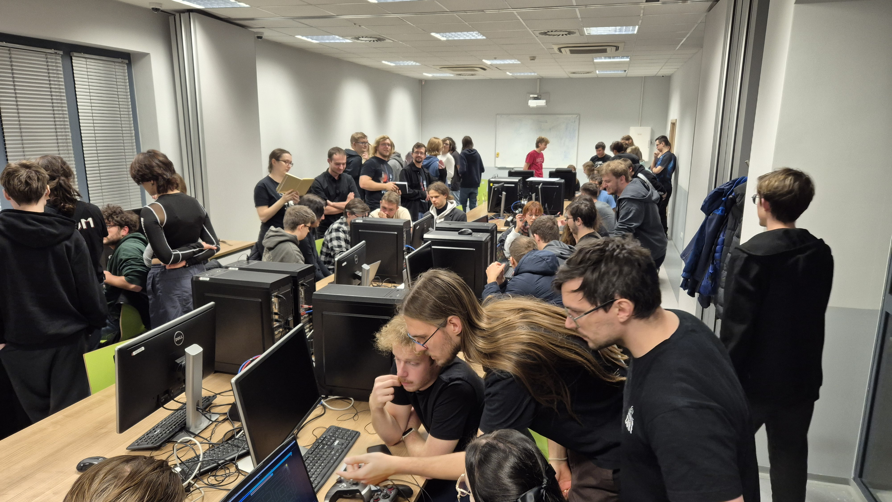
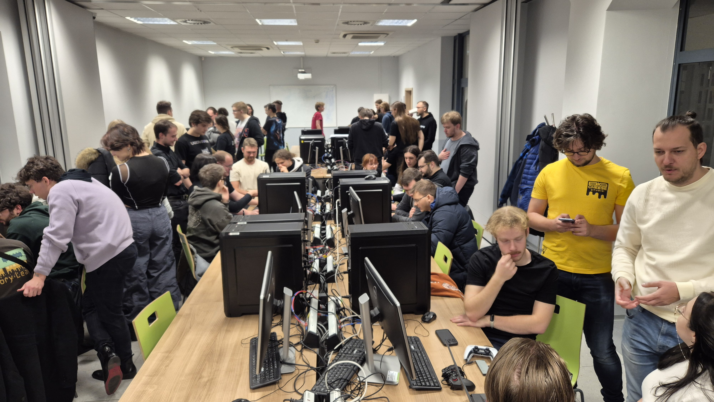
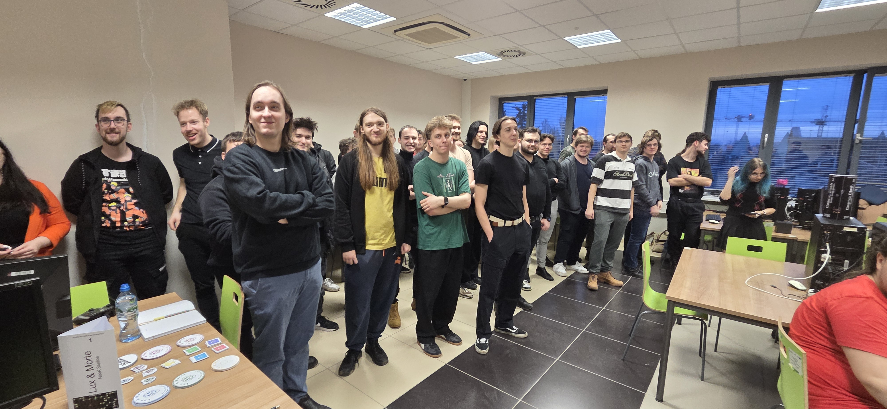
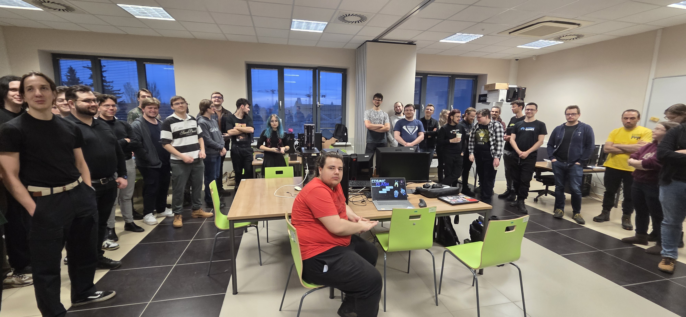
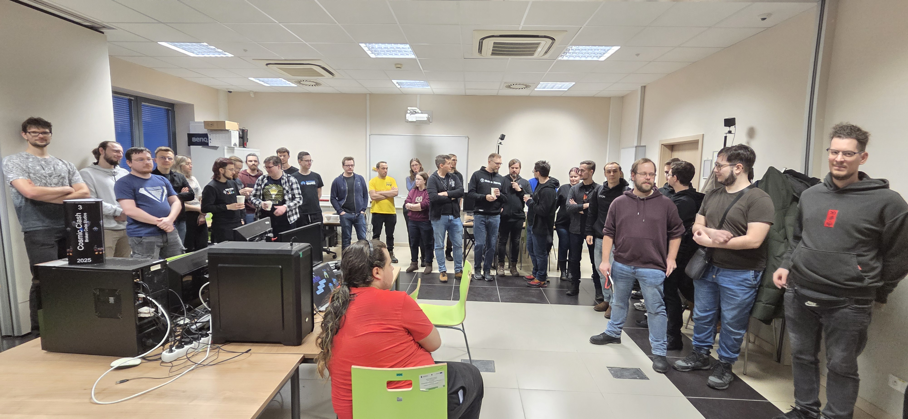
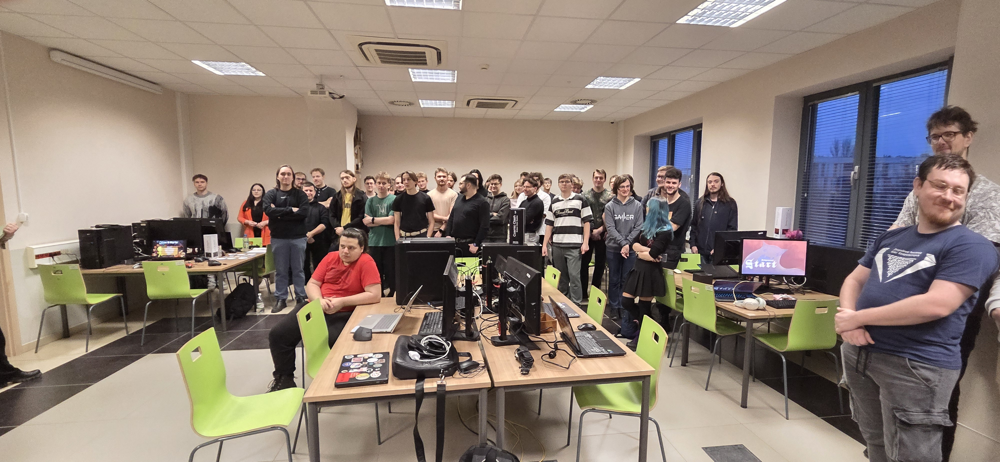
Bit Boat Festival
2026Lux & Morte was showcased during Bit Boat Festival in a live public environment, where players could test the game and experience its asymmetric multiplayer mechanics firsthand.
The event included a community tournament with sponsored prizes, which significantly increased engagement and provided valuable feedback on gameplay balance and player behavior.


Game Access Conference '25
Brno, Czech Republic | 2026Lux & Morte was presented at Game Access Conference '25 in Brno, Czech Republic, which combined both a professional conference and an indie showcase environment.
The conference part featured talks and lectures from industry professionals, providing insight into current trends in game development, production pipelines, and design practices.
In parallel, the Indie Showcase allowed us to present Lux & Morte directly to players and developers, enabling hands-on testing, live feedback collection, and observation of player behavior in real-time.
More information about the showcase can be found here: Lux & Morte – Game Access Indie Showcase page
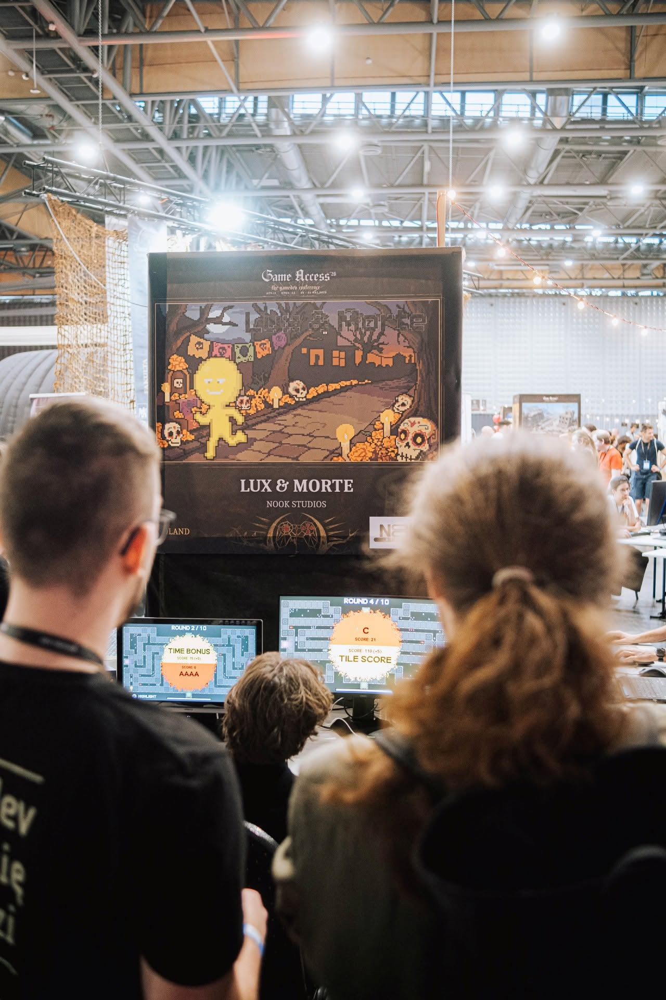
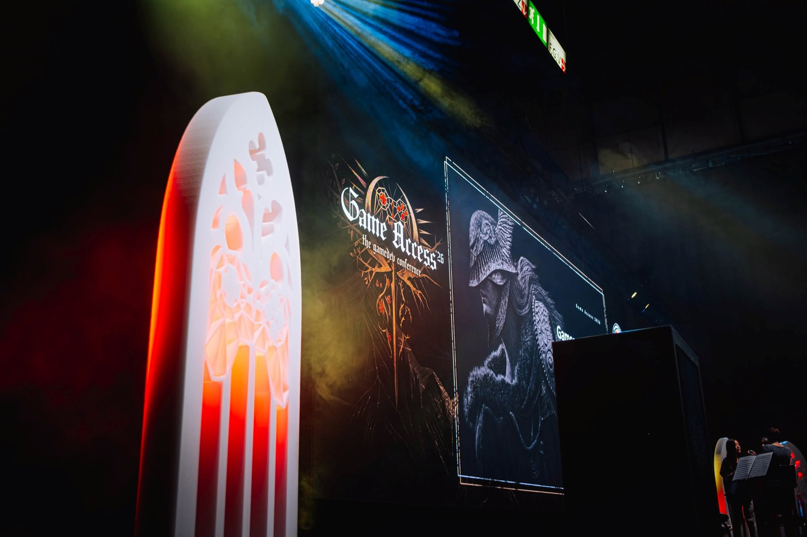
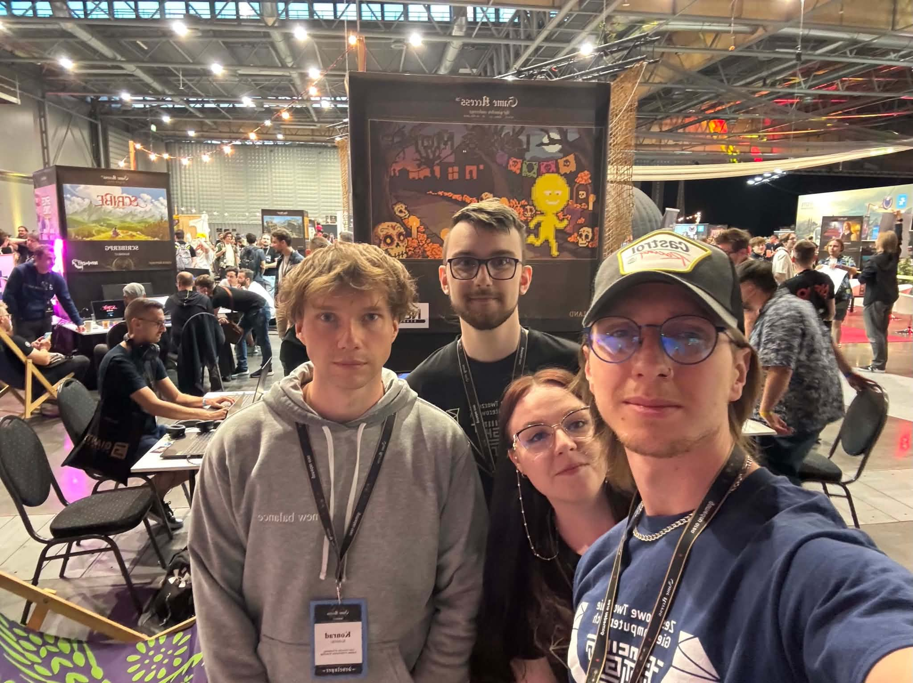
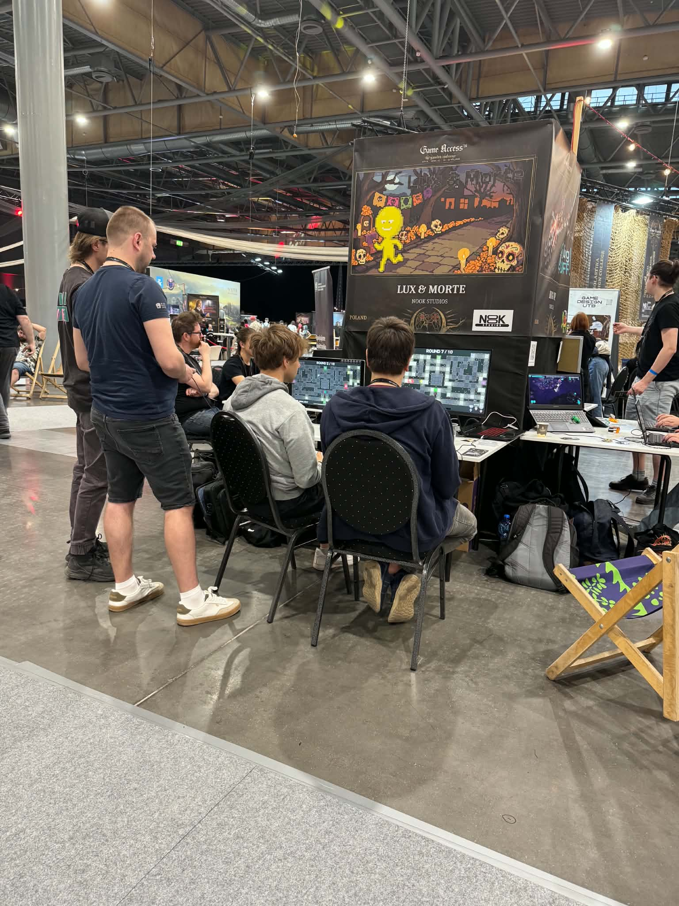
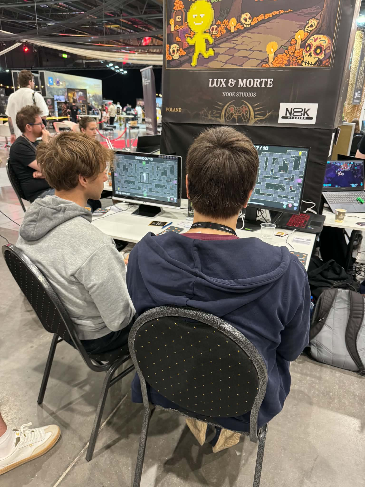
Student Games Festival (Upcoming)
October 2026Lux & Morte has been submitted to the Student Games Festival, where it is planned to be showcased in October 2025.
This event will serve as another opportunity to present the project to industry professionals and gather additional feedback on gameplay systems and multiplayer balance.
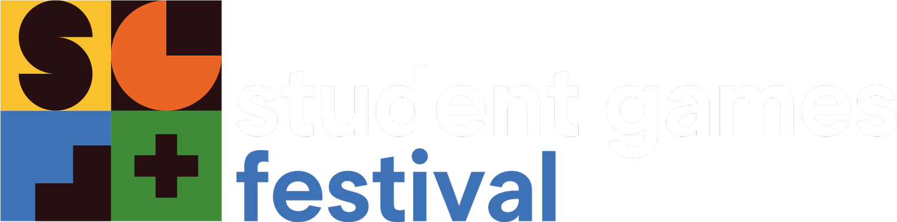